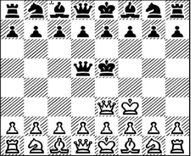

|
Replace this file with prentcsmacro.sty for your meeting, |
||||||||||||||
An Example PaperMy Name 1,2
My Departmentbr My Co-author 3
My Co-author’s Department |
||||||||||||||
|
Abstract This is a short example to show the basics of using the ENTCS style macro files. Ample examples of how files should look may be found among the published volumes of the series at the ENTCS Home Page http://www.elsevier.nl/locate/entcs. Key words: Please list keywords from your paper here, separated by commas. |
||||||||||||||
1 IntroductionThis short note provides a guide to using the ENTCS macro package for preparing papers for publication in your conference Proceedings. The Pro- ceedings may be printed and hard copies distributed to participants at the meeting; this is an option to Conference Organizers may choose to exercise. The Proceedings also will be par of a volume in the series Electronic Notes in Theoretical Computer Science (ENTCS), which is published under the aus- pices of Elsevier Science B. V., the publishers of Theoretical Computer Science. It’s home page is http://www.elsevier.nl/locate/entcs The ENTCS macro package consists of two files: entcs.cls, the basic style file, and _____
1 Thanks to everyone who should be thanked
2 Email: myuserid@mydept.myinst.myedu
3 Email: couserid@codept.coinst.coedu
© 2003 Published by Elsevier Science B. V. |
||||||||||||||
|
entcsmacro.sty, a macro file containing the definitions of some of the theorem-like environments and a few other tidbits. The formatting these style files impose should not be altered – the reason for using them is to attain a uniform format for all papers in the Proceedings of which your paper is a part. Additional macro files can be added using \usepackage{...}. The file entcsmacro.sty must be included in the list, as is done at the start of the source file for this paper. The ENTCS package requires a relatively up-to-date LATEX system in order to be successfully used. This is reflected in two other packages that are called by entcs.cls, which must be available on your machine. These are:
The file instraut.dvi contains information about the use of LATEXto pre- pare files for online publication by Elsevier. This file refers to the older version of LATEX that is no longer suppported, and that is inadequate for preparing .pdf files for online publication. Reading this file should answer most of the basic questions about LATEX that might arise. 2 FrontmatterThe biggest difference between a “usual” LATEX style such as article.sty and the ENTCS package is that the ENTCS macro package requires the title, author’s name or names, abstract, keywords and “thanks” all to be included within the frontmatter environment. At the beginning of the source file for this paper, you’ll notice this. Also, you’ll notice that the usual \maketitle is absent; it no longer is needed. The ENTCS style package automatically generates the title, author’s name and address, and related material at the beginning of the paper. Note also that hyperref has been disabled in this part of the entcs.cls file, so references to footnotes aren’t linked to the appropriate footenotes or addresses. This is an old problem with LATEX, involving the fact that the references within the frontmatter aren’t passed cleanly to the linking software. For those who have used the ENTCS package before, the one new thing to note is the inclusion of Keywords; these are now required by Elsevier – they’re also required by ACM’s Computing Reviews which reviews ENTCS publications. The ENTCS macro package provides two alternatives to listing authors names and addresses. These are described in detail in the file instraut.dvi. Basically, listing each author and his or her address in turn, is the simplest method. But, if there are several authors and two or more share the same address (but not all authors are at this address), then the method of listing authors first, and then the addresses, and of referencing addresses to authors should be used. Also, notice that acknowledgment of support (the contents of \thanks) should be done by a separate listing of \thanks[NSF]{To the NSF} with the optional argument – [NSF] – being used for \thanksref which is attached to those authors acknowledging such support. It is important that the \thanks not be included within the scope of \author{} or of \title{}, but it must be within the scope of the environment frontmatter. More details about added terms such as \collab can be found in inst.dvi, if they are needed. Also, notice that the command \lastname{My Lastname} has been in- cluded before the frontmatter begins. This command should contain the last names of the authors of the paper. If there are no more than three au- thors, then they should be listed with the word “and” between the last two; if more than three authors collaborated on the paper, then the first author only should be listed, together with \emph{et al}. This command creates the headline for each page after page 1. Finally, please be sure to include an abstract for your paper. 3 Sectioning and EnvironmentsSince ENTCS is published through the auspices of Elsevier Science B. V., their style files have been used to create the ENTCS macro package. Here’s a proof that this package is not much different than most of the ones one encounters: Definition 3.1 A file is derived from another if it is obtained with only a few modifications from the original file. Theorem 3.2 The file entcs.cls is derived from elsart.sty. Proof. This is clear from the similarity of the output to the output from Elsevier’s style files. If one wants to start a proof with a descriptive word, such as “sketch”, then one can use the \begin{proof*}...\end{proof*} environment, as in Proof (Sketch) This can be derived from simple observations. The main differences between the file entcs.cls and the elsartr.cls file used by Elsevier are the more precise format we use – Elsevier’s generic files are meant for preliminary editing, and more precise formatting is imposed using a macro file designed for the specific Elsevier journal in which the paper will eventually appear. The entcs.cls and entcsmacro.sty files format papers 3Please list Your Lastname Here uniformly so that they all are easily recognizable as being from the series Electronic Notes in Theoretical Computer Science. All of the usual features of LATEX are available with these style files – it is only the formatting that has been rigorously defined. Thus, one has available the sectioning commands \section, \subsection, \paragraph and \subparagraph. The numbering scheme used is one under which Theorem 1.2.3 is the third numbered item in second subsection of the first section of the paper. In order to facilitate cross-references, all of the named environments given below are numbered, and all use the same number scheme. The file entcsmacro.sty contains additional information that is needed to typeset a paper. It also has the definitions of the AMS euler and blackboard bold fonts builtin. If you want to use symbols for the natural numbers, the reals, etc., then we prefer that you use the blackboard bold fonts, and not plain bold fonts. This is accomplished by using the \mathbb font, as in N or R. The names of theorem-like environments are provided in entcsmacro.sty. With the exception of the environment Algorithm, the names of all of these are full name, rather than a shortened version. The environments provided and their names are
For example, Algorithm 1 Step 1: Write the paper
Step 2: Format it with the ENTCS macro package
Step 3: Ship the whole thing to the Guest Editors
4 References and Cross-referencesAll the cross-referencing facilities of LATEX are supported, so one can use \ref{} and \cite{} for cross-references within the paper and for references to bibliographic items. As is done in this note, the References section 6 can be composed with \begin{thebibliography}...\end{thebibliography}. Alternatively, BibTEX can be used to compile the bibliography. Whichever one is used, the references are to be numbered consecutively, rather than by author-defined acronyms. Of course you can use your own acronyms for easy reference to each of the items in the bibliography, as has been done with the listing for this short note. However, note that the references should not be started with a new \section command. The package hyperref is automatically loaded by entcs.cls, and this makes all the cross-references within the document “active” when the pdf file of the paper is viewed with Adobe’s Acrobat© Reader. The format for including a link is simple: simply insert \href{URL} {text} where URL is the URL to which you want the link to point, and text is the text you want to be highlighted, which when clicked upon will bring up the desired web page. 4.1 Particulars about .pdf filesWe now require that .pdf files be provided for publication online. A .pdf file is viewable by Adobe’s Acrobat© viewer, which can be configured to load automatically within a browser. Viewing a properly formatted .pdf file with Acrobat c allows the cross-references and links to URLs to be active. In fact, Elsevier utilizes .pdf files in order to take better advantage of the web’s ca- pabilities. But one point we want to emphasize is that you should be sure to use Type 1 fonts when you typeset your LATEX source file. These fonts are scalable, meaning that they carry information that allows the devise viewing the final output to scale the fonts to suit the viewer being used – from an onscreen viewer such as Adobe’s Acrobat c Reader, to printing the file on a printer. You can tell if you have used the right fonts by viewing the final output on your machine. It the fonts look grainy, then you have not used Type 1 fonts. They can be located at the CTAN archive http://www.ctan.org – they are public domain fonts, and don’t cost anything to add them to your system. Assuming you have Type 1 fonts available, then there are there methods for producing .pdf files. Using dvips and ps2pdf We list this option first since it appears to be the most reliable and the easiest to use, especially if you include embedded PostScript graphics (.eps files) in your source file. Simply run LATEX2e on your source file, then apply dvips to produce a PostScript file, and finally apply ps2pdf to obtain a .pdf file. The DVIPDFM utility Another easy method for producing acceptable .pdf files is via the utility dvipdfm. This utility is included in distributions of MikTEX, which runs on Windows machines, but it probably needs to be added to your teTEX distribution, if you are running LATEX on a UNIX machine. The utility and precise information about installing it on your system can be found at the web page http://gaspra.kettering.edu/dvipdfm/. In essence, this utility converts a .dvi file into a .pdf file. So, one can first prepare the .dvi file using LATEX, and then apply the utility dvipdfm to produce the needed .pdf file4. This utility makes inclusion of graphics particularly simple – those that are included in the LATEX source file are simply converted to the .pdf format. As we note below, things are not so simple with the second alternative, which is to use pdfLATEX. pdfLATEX An alternative to the first possibilities to produce .pdf files is to process the source file with pdfLATEX. This format is available from the standard CTAN sites http://www.ctan.org. It appears that pdfLATEX and hyperref have some problems when used together. It is necessary to use pdfLATEX version 14d or later in order to minimize these issues. If your system has an earlier version (most teTEX distributions have version 13d), then you can update your system by retrieving the latest version of pdfLATEX from ftp://ftp.cstug.cz/pub/tex/local/cstug/thanh/pdftex/ . Even if the recent versions are used, pdfL A TEX has the same dealing with references em- bedded with the frontmatter section described above for LATEX. But there is one aspect of pdfLATEX that creates problems. Many authors include EPS5 files within their papers. While this is fairly straightforward with LATEX, there are a couple of points to note when attempting this with pdfLATEX. To include a PostScript image in a .pdf file produced with pdfLATEX, you first have to convert the image to a .pdf file, and then it can be in- cluded using the same command sequence as above. The conversion can be _____
4
Beware! The utility dvipdf does not produce acceptable .pdf files, and should not be
used. Only dvipdfm should be used to produce .pdf files.
5
EPS stands for embedded PostScript, which affords a mechanism for including pre-
prepared PostScript files within a LATEX document.
accomplished most easily using Ghostscript; you can simply view the file in Ghostview and then print the image to a .pdf file using the pdfwriter option within Ghostview. The result for a standard chess board that is part of the Ghostview distribution is the following image:  Here as well is a copy of a color image. While pdfLATEX can handle image files in other formats, L A TEX can only handle .eps images reliably.
It also should be noted that we have included two separate source files for this example file – one for LATEX and one for pdfLATEX – because we want 7Please list Your Lastname Here to illustrate how to insert graphics images into the file. If your paper does not include such images, then the same source file can be formatted by either LATEXorf by pdfLATEX.
Using ENTCS Macros with Mac OS X 5 SummaryThe ENTCS macro package is relatively easy to use and provides a uniform layout for all the papers that appear in ENTCS. Problem 5.1 Finish your paper and get it to your Program Chairman on time! When you have finished preparing your paper, send a copy of the source file, together with any macro files that are needed to your Program Chairman. If the files are extensive, you can place copies in the pub/incoming sub-directory of the ftp directory on the machine indicated by your Program Chairman using anonymous ftp. If you do this, please send me email to alert me that the file(s) are here.
Assigning Volume / Issue Numbers
Copyright Transfer Forms
Publication of Final Versions 6 Bibliographical referencesENTCS employs the plain style of bibliographic references in which references are listed in alphabetical order, according the the first author’s last name, and are sequentially numbered. Please utilize this style. We have a BibTEX style file, for those who wish to use it. It is the file entcs.bst which is included in this package. The basic rules we have employed are the following:
The criteria are illustrated in the following. References
|